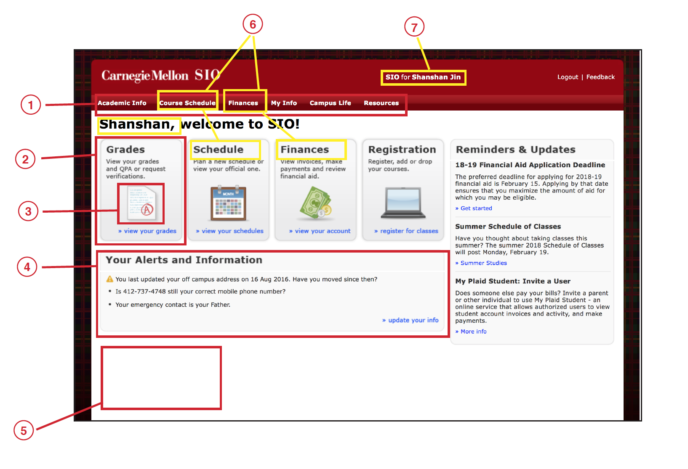

Scope
Personal Project
Three weeks
Role
UX Research
Web Design
Skills
User Interview
Prototyping
Wireframe
Tools
Sketch
InVision
Illustrator
Photoshop
HTML
CSS
Bootstrap
1.1 Context
The CMU SIO project is a design challenge assignment in the Advanced Web Design course at Carnegie Mellon University. This class is taught by Andrew Twiggs at CMU in spring 2018.
1.2 The Challenge
How might we improve the design of CMU’s SIO system to achieve
(1) modern visual design
(2) platform responsiveness, and
(3) enjoyable user experience?
For this four-week design challenge, SIO office asked use to choose one of the following three screens to work on.
left: “course schedule” landing page | mid: SIO home page | right: “Grades and QPA” page under “Academic Info”
I decided to work on the SIO home page, as I see interesting opportunities in making this page more user friendly and straight forward.
1.3 Design Process
1.4 Secondary Research
- The navigation bar looks like a huge button on the top of the page. It doesn’t give user a sense the each text is able to be clicked on.
- The button look of the second navigation set doesn’t look modern to me. I find it hard to appreciate the round corner and the gradual change of color. Also, there are a lot of text on it so it makes me feel that it looks more like a chunk of information instead of a clickable button.
- The series of icons on the button don’t look modern. They are also in non-uniformed styles. Probably because there are too many colors and texture. For example, the dollar sign is drawn in 2D and the screen of the computer sign is drawn in 3D.
- The alert and information bar looks very empty. Except of the little yellow importance icon on the left of the first line of sentence, the other part of the alert and information doesn’t look very important to me. If this is a part that the SIO wants students to notice, it should be designed in another way.
- A lot of the space above the fold line are wasted. It makes me feel that there are less content than I thought that the SIO website should have.
- The text on the top navigation bar is repeated in the lower navigation bar and it makes me a little confused.
- The information about the master of current account is also repeated. I think SIO could delete on of them to make the page look more clean.
- The reminder and update part might be moved to lower part of the page since they are not the most often used part of the homepage.
- Also, adding a homepage button might also be good since now the Carnegie Mellon SIO logo is the only way to go back to homepage and it’s not very clear to user that the logo is clickable. The resolution of the logo is also very low and makes people feel that the page is very low end.
- The biggest problem of the homepage is that it is now responsive to different screen sizes. The text and navigation bars cannot adjust with the width of the screen and people have to move the screen left to right to click through things on the page on their phone.
1.5 User Research / Primary Research
Observation
CMU Student Information Online (SIO) serves as the student's secure profile. Within SIO, students are able to use following functions:
Interview
To get a sense of how current students use and feel about SIO, I had a few conversation with undergraduate and graduate students on their experiences. Here are some recurring topics:
“It’s not mobile friendly so I never think of using it on mobile.”
“For something important, like registering for classes, I’m going to use my laptop anyways.”
“I never go to the schedule page other than registering my classes. Once I choose my classes I’ll just put them in my own calendar.”
“There are just a lot of text and links on the page and most of them aren’t really useful to me.”
I also did interview with the SIO officers including their head officer, the registration officer, and technical officer. Some of the points that were mentioned are:
"The privacy of information is very important. So we would like a design that doesn't reveal students' personal information on the desk."
"The database is very large so we would like a design that could connect well with our database."
"In the long-run we would like to make our homepage into a dash board."
"The main issue that we would like to solve first is to make the sio page responsive to different platforms and devices."
Survey
To further understand the needs of students using SIO landing page, I conducted a survey among CMU students from different school year and majors. I gathered over 40 validate research within 1 week. The surveys helped me to identify and reassure some problems in using sio page. Some key findings are:
- Students are using SIO mainly for (1) course planing/registration, (2) schedule/grades checking, and (3) financial payments
- The three functions that students stated that they were constantly using are:
(1) View semester schedule (2) Plan semester schedule (3) Registration - The three functions that students stated that they only used it once through a semester are:
(1) View and update my info (2) Enrollment status/request varification (3) Droped courses - Most students suggested that the information are hard to find.
- Most students dislike the current interface design.
- Most students stated that they would like to check SIO on their mobile devices.
2.1 Design Concept
2.2 High-fidelity HTML Prototype
The original home page was designed into a mordern dash board. I created the page on html so that people could feel how it works on real screen.